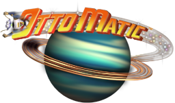

WebAssembly port — runs in your browser via Emscripten

These exported WASM functions can be called from the browser console or
injected by your level-editor integration. The game also accepts
?level=N and ?terrain=PATH URL params to skip
menus and load a specific level on startup.
OttoMatic_SetFenceCollisions(0 | 1)
OttoMatic_SetGodMode(0 | 1)
OttoMatic_SetSpeedMultiplier(float)
OttoMatic_SkipToLevel(int)
Upload a .ter data fork and its companion .ter.rsrc
resource fork to inject custom terrain. Files are written to the WASM virtual
filesystem under /Data/Terrain/. You can also use
FS.writeFile() from the console and then call
OttoMatic_SetTerrainPath.
OttoMatic_SetFenceCollisions(0) — disable fence collisions (pass through fences)OttoMatic_SetFenceCollisions(1) — re-enable fence collisionsOttoMatic_SetGodMode(1) — enable god mode (immortality)OttoMatic_SetGodMode(0) — disable god modeOttoMatic_SetSpeedMultiplier(2.0) — double movement speedOttoMatic_WarpToCoord(x, y, z) — teleport player to world coordinatesOttoMatic_SkipToLevel(3) — skip to level 3 (0–9)OttoMatic_GetCurrentLevel() — returns current level numberOttoMatic_GetPlayerX/Y/Z() — returns player world coordinateOttoMatic_GetPlayerHealth() — returns health (0.0–1.0)OttoMatic_GetPlayerLives() — returns remaining livesOttoMatic_SetTerrainPath("/Data/Terrain/foo.ter") — override terrain file for current level?level=3 · ?terrain=/Data/Terrain/Custom.ter